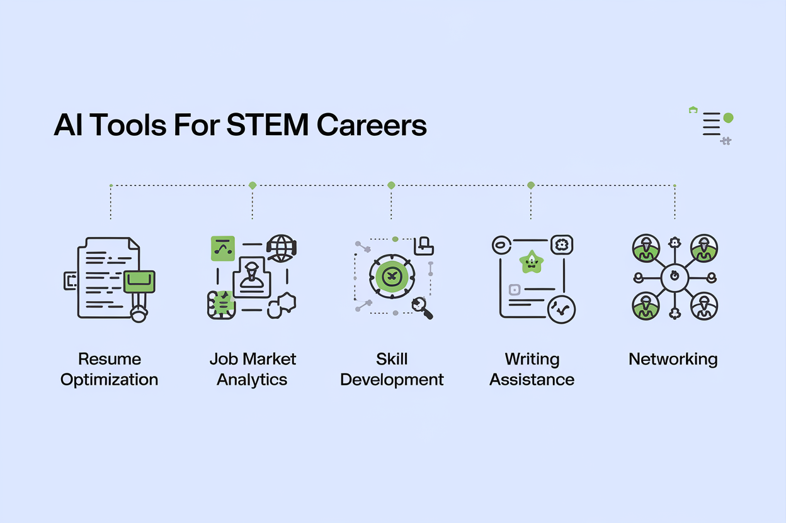
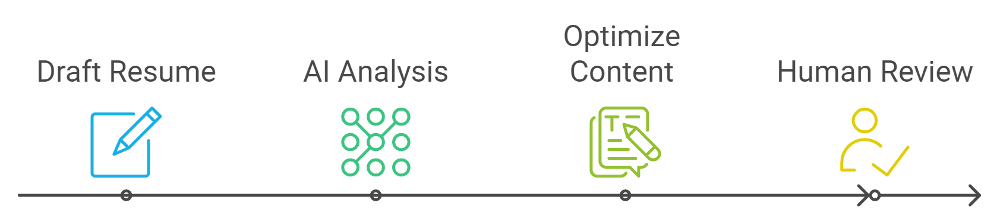

Welcome, tech-savvy trailblazers. In this chapter, we're unveiling the ultimate toolkit for the modern STEM professional, like releasing a swarm of helpful AI minions ready to supercharge your professional journey.
First stop on our AI adventure: resume optimization tools. These digital wizards can transform your resume from a plain Jane CV to a head-turning, ATS-wooing masterpiece.
Key Features:
How to Use It Effectively:
Key Features:
Best Practices:
Key Features:
Maximizing VMock's Potential:
Next up, we're diving into the crystal balls of the job market.
Key Features:
Strategic Usage:
Key Features:
Leveraging Glassdoor Effectively:
Key Features:
Maximizing Burning Glass Insights:
Continuous learning in STEM is not just important; it's as essential as coffee on a Monday morning. These AI-driven platforms are here to caffeinate your career with the skills you need to stay competitive.
Key Features:
Effective Usage:
Key Features:
Maximizing DataCamp's Potential:
Key Features:
Strategic Approach:
In STEM, clear communication is as crucial as a stable internet connection during a video call. These AI writing tools are here to ensure your professional communications are clearer than a virgin whiteboard.
Key Features:
Best Practices:
Key Features:
Effective Usage:
Key Features:
Maximizing Hemingway's Potential:
Networking in STEM is like coding – it's essential, sometimes challenging, but incredibly rewarding when done right. These AI-powered tools are here to upgrade your networking game from dial-up to fiber optic.
Key Features:
Strategic Networking:
Key Features:
Effective Usage:
Key Features:
Leveraging CrystalKnows:
As we dance with these AI tools in our STEM career tango, let's not forget the importance of leading with integrity. Here are some ethical considerations and best practices to keep in mind:
Ready to weave these AI tools into the fabric of your career strategy? Here's your roadmap to AI-enhanced professional success:
Remember, AI tools are meant to augment, not replace, your professional judgment and expertise. As a STEM professional, you're uniquely positioned to leverage these tools effectively while understanding their underlying mechanisms and limitations.
And there you have it, future leaders of the AI-enhanced STEM world. You've just been equipped with a toolkit that would make Tony Stark jealous. The AI revolution isn't just changing the nature of work in STEM fields; it's transforming how we approach career development and job searching. By thoughtfully integrating these AI-powered tools into your professional arsenal, you're not just keeping up with the competition – you're quantum leaping ahead.
As you embark on your AI-enhanced career journey, remember to stay curious, remain ethical, and never stop learning. The future of STEM is bright, and with these tools at your disposal, you're well-equipped to not just shape that future, but to define it.
Now go forth and conquer, you brilliant, AI-augmented STEM superheroes! The world is your oyster, and AI is your pearl-finding assistant.
Which of the following is NOT a recommended practice when using AI-powered resume optimization tools?
How can LinkedIn Salary be effectively used in career development?
What is a key consideration when using AI writing assistants for professional communication in STEM fields?
Which ethical consideration is most important when using AI tools for career development?
How should STEM professionals approach the integration of AI tools in their career strategy?
Answers: 1-b, 2-b, 3-c, 4-b, 5-c
How did you do? If you aced it, congratulations! You're well on your way to becoming an AI-powered career ninja. If not, don't worry – even AI has to learn and improve. Keep exploring these tools, and soon you'll be navigating the AI-enhanced career landscape like a pro!